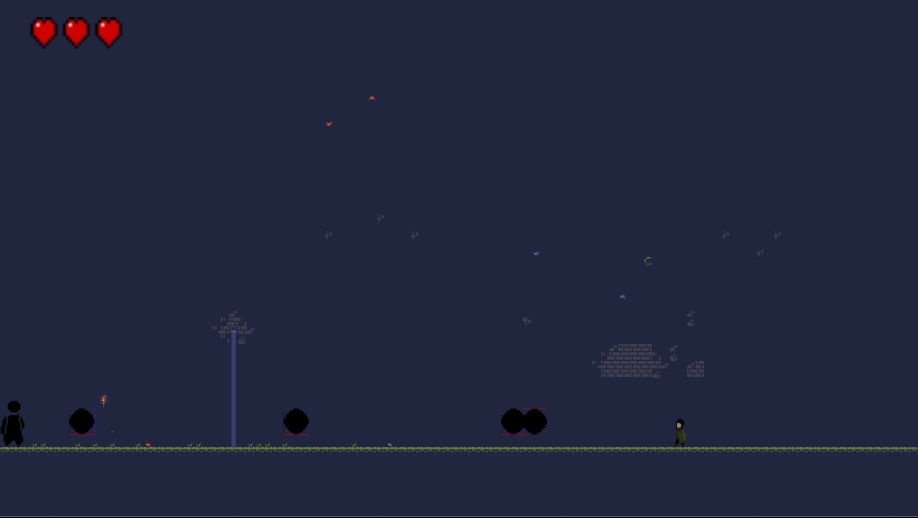

Bem-vindo ao Eco da Caverna Abissal
Desperte seu poder e enfrente os horrores que espreitam nas profundezas.
Jogue AgoraSobre o Jogo
Há séculos, uma criatura ancestral conhecida como Vhor'Zhul, o Devorador de Almas, foi selada nas profundezas da Caverna Abissal. Agora, ele desperta, corrompendo tudo ao seu redor e enviando monstros à superfície.
Você é Kael, um guerreiro marcado pelo passado, guiado por visões e armado com uma lâmina ancestral. Sua missão é clara: descer até o fundo da caverna, derrotar as criaturas corrompidas e encarar Vhor'Zhul em um confronto final que decidirá o destino do mundo.
Galeria de Fotos

Contato
Envie suas dúvidas ou sugestões para: contato@ecoabissal.com